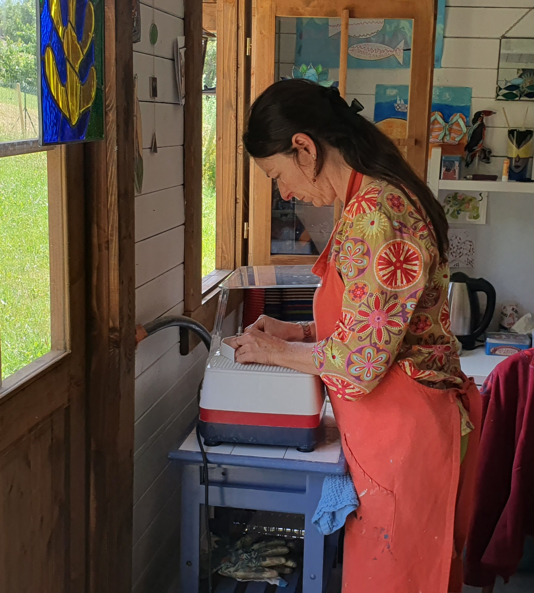

Dessin
Après avoir fait un dessin, je le découpe pour obtenir des gabarits.

La fabrication

Après avoir fait un dessin, je le découpe pour obtenir des gabarits.
Ces gabarits me permettent de découper les morceaux de verre.
Ces morceaux de verre sont ensuite meulés à l'eau.
J'applique un ruban de cuivre sur la tranche de chaque morceau de verre.
J'assemble les différentes pièces de verre comme un puzzle afin de les souder ensemble à l'étain.